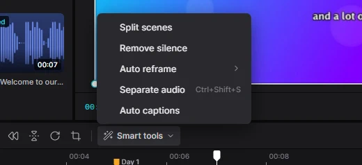
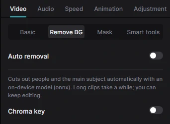
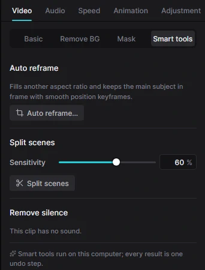

Для людейТворчість4 хв читання
ШІ-інструменти
Розумні інструменти беруть на себе нудну роботу: знаходять зміну сцен, вирізають тишу, стежать за об’єктом під час зміни формату й вирізають людей із фону. Усі вони працюють на вашому комп’ютері — нічого не завантажується в мережу.
Де їх шукати
- Меню Smart tools на панелі інструментів над таймлайном: Split scenes (поділ на сцени), Remove silence (вирізати тишу), Auto reframe (автокадрування), Separate audio (відокремити звук), Auto captions (автосубтитри).
- Контекстне меню кліпу показує розумні інструменти, доречні саме для нього.
- Інспектор: Video → Smart tools (з додатковими параметрами) і Video → Remove BG.
Спершу виділіть кліп — якщо інструмент не підходить, меню підкаже «Select a clip» або «Not for this clip». Довші завдання повідомляють про старт і працюють у фоні; кожен результат — один крок скасування, тож Ctrl+Z поверне все як було.

Видалення фону
Вирізає людей або головний об’єкт із відео чи фото — без зеленого фону. Крізь вирізане місце видно нижні доріжки або тло полотна.
- Виділіть кліп і відкрийте в інспекторі Video → Remove BG.
- Увімкніть Auto removal. Смуга прогресу покаже «Finding the subject» (пошук об’єкта), відсоток і час, що лишився. Можна далі монтувати; Cancel зупиняє процес.
- Коли все готово, об’єкт вирізано. Redo обчислює все заново (наприклад, після встановлення кращої моделі); вимкнення перемикача повертає фон.

Що потрібно
Видалення фону працює на безкоштовному Python-пакеті rembg. Налаштування — одноразове:
- Встановіть Python
Встановіть Python 3 із python.org і поставте позначку Add python.exe to PATH (якщо ви вже налаштували автосубтитри, Python у вас є).
- Встановіть rembg
Відкрийте PowerShell і виконайте:
pip install rembg onnxruntimeПід час першого видалення фону rembg один раз завантажить свою модель; далі все працює офлайн.
- Перевірте в Kadr
Відкрийте Video → Remove BG. Якщо там написано Auto removal is not available on this computer, поруч пояснено, чого бракує; виправте це й натисніть Check again (або перезапустіть Kadr).
Для досвідчених: замість rembg Kadr може використати onnxruntime з будь-якою ONNX-моделлю маскування (U²-Net, IS-Net, MODNet…), збереженою як models\matting.onnx у папці даних Kadr. На довгих чи 4K-кліпах видалення займає час — тим часом можна монтувати далі.
Поділ на сцени
Маєте довге відео з кількох планів — трейлер, запис екрана зі склейками, збірку? Split scenes знаходить кожну зміну плану й розрізає там кліп, щоб плани можна було видаляти чи переставляти.
- Швидко: виділіть відеокліп і оберіть Smart tools → Split scenes.
- З параметрами: Video → Smart tools → Split scenes. Збільште Sensitivity (чутливість), щоб ловити м’якші переходи, зменште — якщо Kadr ріже надто часто.
Вирізання тиші
Ідеально для розмовних відео, уроків і подкастів. Виділіть відео- чи аудіокліп із мовленням і оберіть Smart tools → Remove silence. Kadr виріже кожну паузу, довшу за пів секунди, і закриє проміжки; повідомлення скаже, скільки пауз і секунд прибрано.
Для точнішого контролю — прибрати «е-е» чи задати довжину пауз — скористайтеся вкладкою Transcript.
Автокадрування
Перетворює горизонтальне відео на вертикальне (чи квадратне), не втрачаючи об’єкта: Kadr стежить за людиною чи головною дією й плавно рухає кадр ключовими кадрами.
- Швидко: виділіть відео- чи фотокліп, відкрийте Smart tools → Auto reframe і оберіть 9:16, 1:1, 4:3, 3:4 або 16:9. Проєкт теж перейде на цей формат.
- З параметрами: Video → Smart tools → Auto reframe… дає обрати Ratio (формат), Smoothness (плавність руху «камери») і чи перемикати Canvas (полотно); потім натисніть Reframe.
Після цього ключові кадри положення можна підправити, як і будь-які інші ключові кадри.

Інші розумні функції
- Автосубтитри й монтаж за транскриптом з офлайн-Whisper — Субтитри й транскрипт.
- Відокремлення звуку — Аудіо.
- Auto adjust для кольору — Корекція кольору.
- Reduce image noise, Remove flicker (Video → Basic) і Reduce noise для звуку (Audio → Basic).
Доручіть керування ШІ-асистентові. Усе описане вище — і весь редактор — може виконувати Claude чи інший ШІ-асистент: «виріж тишу, додай субтитри з підсвічуванням слів і експортуй вертикальну версію». Ви бачите кожен крок у вікні. Почніть із документації для ШІ.